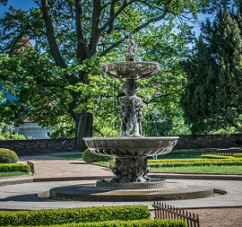
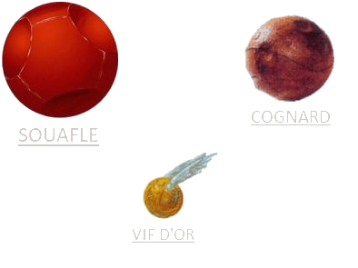

L'académie de magie Beauxbâtons est une école de sorcellerie française. Beauxbâtons est similaire à l'école de sorcellerie Poudlard. Elle est une des écoles invitées au Tournoi des Trois Sorciers en 1994 - 1995. C'est un superbe château entouré de jardins à la française découpés par magie dans le relief montagneux. Dans le parc se trouve une magnifique fontaine qui possède des pouvoirs de guérison et portant le nom de Flamel, en l'honneur de Nicolas et Pernelle Flamel, tous deux anciens étudiants de Beauxbâtons, et qui ont en partie financé la construction de l'académie grâce à leur or alchimique. L'Académie compte un groupe de danse, une chorale, un orchestre, un groupe de théâtre, mais aussi un groupe de techniciens pour la mise en scène des spectacles, le tout orchestré par l'effrayante vélane Harmonie LunisťEl.

Il y a un immence jardin à la française, disposé autour d'une immense fontaine centrale.
Le château. À l'Ouest de celui-ci, les écuries, et à l'Est, un appentis ressemblant à une cabane de jardinier, dans laquelle se trouve la seule entrée / sortie de l'Académie.
Un second jardin, encore plus grand que le précédent.
Un rivière enchantée de manière à apparaître totalement opaque, dans laquelle nageraient des sirènes.
Le terrain de Quidditch, qui a la particularité, unique au monde, d'être creusé dans la montagne. Cette particularité est due au fait que le domaine est dissimulé sous une illusion que les joueurs, notamment les Attrapeurs, pourraient traverser, révélant ainsi la localisation de l'Académie.
Le Quidditch est un sport de fiction qui se joue sur des balais dans l’œuvre de J.K Rowling : Harry Potter. C'est est un sport se jouant sur des balais entre deux équipes comptant 7 joueurs. Il existe plus de 700 fautes et nous savons qu’elles ont toutes été commises lors d’un match amical. Il y a 4 balles en jeu sur le terrain de Quidditch : Un souafle; Deux cognards; Le vif d’or. Le Souafle est une balle rouge ou bordeaux avec trois trous pour faciliter la prise en main, en plus il y a un sortilège qui attache la main au Souafle et ralenti sa chute, car les arbitres trouvaient qu’aller ramasser la balle tout le temps était assez peu pratique, surtout par temps de pluie… On l’utilise pour marquer des buts, les joueurs pouvant la toucher sont les Poursuiveurs et les Gardiens. Dès qu’un but est marqué, 10 points sont ajoutés à l’équipe ayant marqué. Les Cognards sont deux balles hystériques qui ont pour seul but dans les matches de frapper le plus fort possible un maximum de joueurs, et parfois même, de les blesser. Les joueurs qui doivent s’occuper de ces balles folles sont les Batteurs. Le Vif d’Or est la balle la plus importante du match. Pour y mettre fin, il faut absolument que l’Attrapeur s’en empare avant l’Attrapeur adverse ne le fasse. De plus, en l’attrapant, il fait gagner 150 points à son équipe, lui assurant une victoire presque totale.
Une vaste forêt, principalement constituée de pins, qui abritent de nombreuses espèces magiques, la plupart inoffensives. Vers le centre de la forêt se trouve une étrange clairière capable de tourner sur elle-même à une vitesse telle que ceux qui sont dedans à ce moment ont l'impression que c'est la forêt qui tourne autour d'eux.